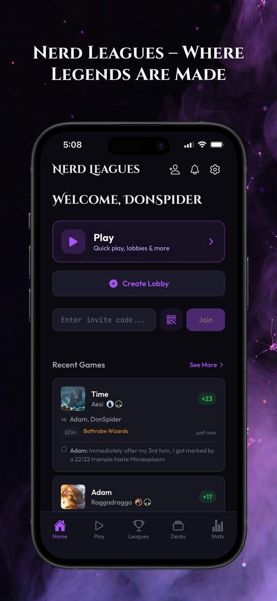
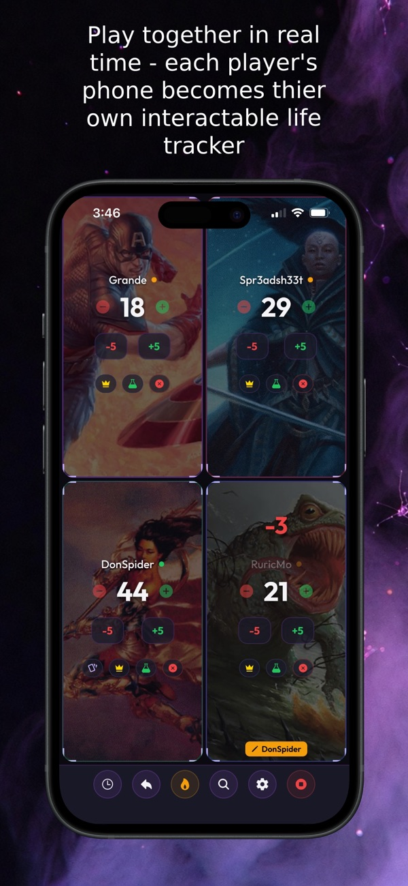
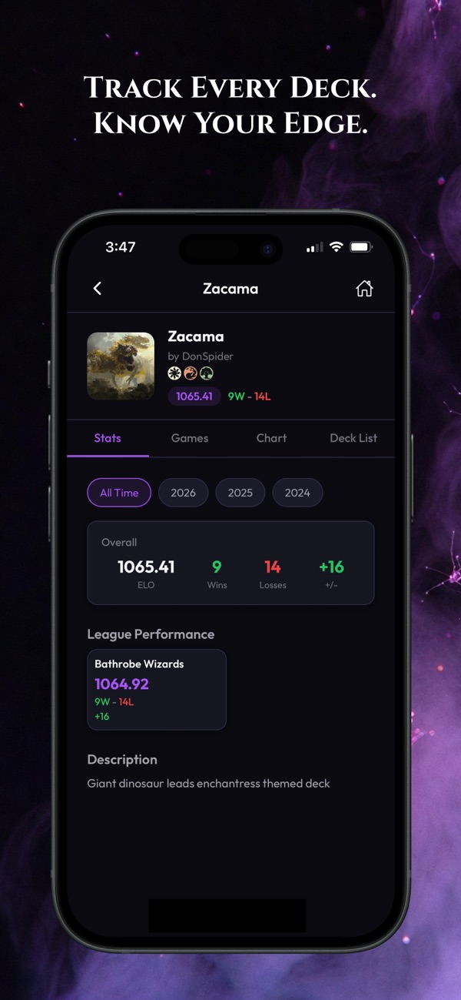

Nerd Leagues
A home base for people who play Magic: The Gathering.
Players use it to run their weekly leagues, record their games, see where they rank, and build and share decks. I co-founded it and wrote most of the code, and I built the phone app entirely on my own — it's on the App Store and Google Play.



724members
1,413decks built
525games recorded
155articles
One thing I'm proud of: a deck-checking tool used to take 11 seconds to load. I rebuilt how it gets its data and got it down to a blink, which made it fast enough to open up to everyone instead of just signed-in members.